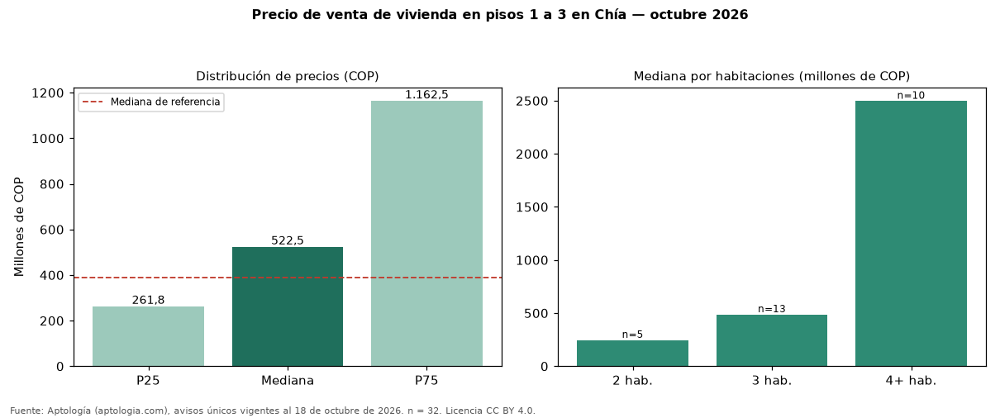

Precio de venta de vivienda en pisos 1 a 3 en Chía — octubre 2026
COP 522 millones es la mediana de venta de vivienda en pisos 1 a 3 en Chía, según 32 avisos únicos. Eso es 34 % más que la mediana de toda la oferta de venta en Chía (COP 390 millones). El rango intercuartílico va de COP 262 millones a COP 1,16 mil millones (razón 4,4). Por metro cuadrado, la mediana es COP 5.175.455/m² (+1 % frente a COP 5.131.661/m²), puesto 2 de 7 ciudades comparables. Por habitaciones: 2 habitaciones, COP 244 millones (n = 5); 3 habitaciones, COP 485 millones (n = 13); 4 o más habitaciones, COP 2,50 mil millones (n = 10). El área mediana es 127 m² (referencia: 70 m²). El estrato más frecuente es 4. Datos abiertos CC BY 4.0 de Aptología; fuente y búsqueda de inmuebles: https://www.aptologia.com/venta/chia. Archivos: PDF de 2 páginas, CSV con las cifras y gráfica PNG.

| Avisos únicos | 32 |
|---|---|
| Percentil 25 | COP 261.750.000 |
| Mediana | COP 522.500.000 |
| Percentil 75 | COP 1.162.500.000 |
| Mediana por m² | COP 5.175.454 |
Fuente: avisos vigentes de portales inmobiliarios recopilados por Aptología, deduplicados (mínimo 30 avisos únicos por celda). Precios pedidos, no cerrados. Fecha: 2026-10-18.